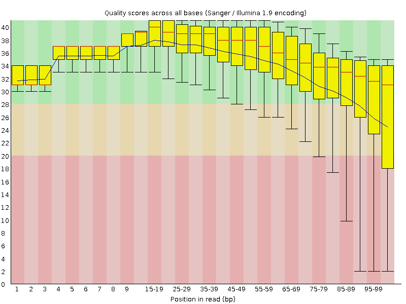
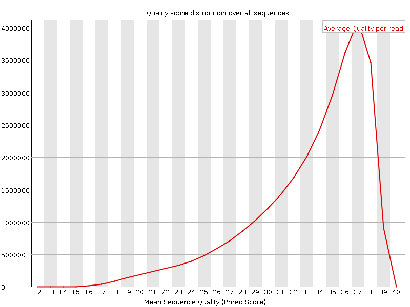
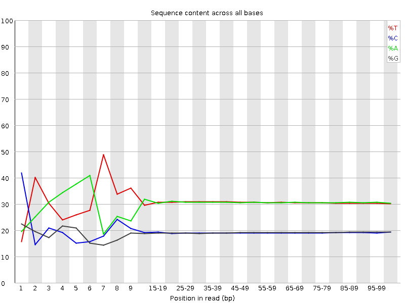
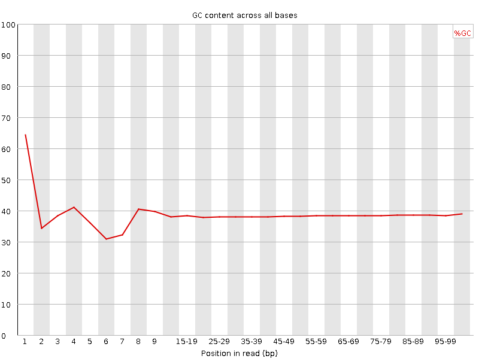
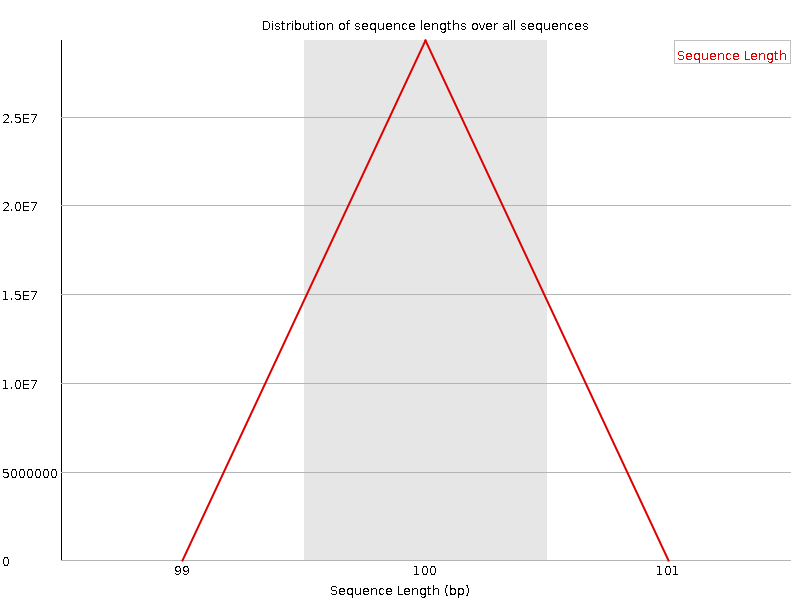
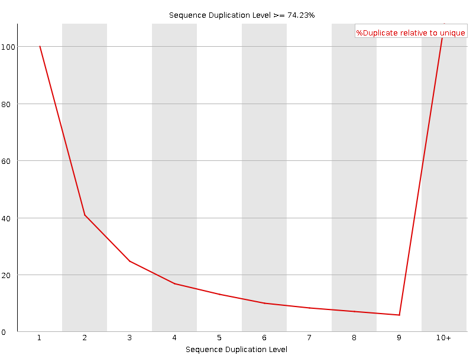
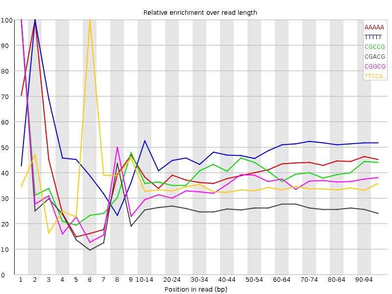

![[OK]](Icons/tick.png) Basic Statistics
Basic Statistics
| Measure | Value |
|---|---|
| Filename | t5.1.fq |
| File type | Conventional base calls |
| Encoding | Sanger / Illumina 1.9 |
| Total Sequences | 29293469 |
| Filtered Sequences | 0 |
| Sequence length | 100 |
| %GC | 38 |
Per base sequence quality

Per sequence quality scores

![[FAIL]](Icons/error.png) Per base sequence content
Per base sequence content

Per base GC content

![[WARN]](Icons/warning.png) Per sequence GC content
Per sequence GC content

Per base N content

Sequence Length Distribution

Sequence Duplication Levels

Overrepresented sequences
No overrepresented sequences
Kmer Content

| Sequence | Count | Obs/Exp Overall | Obs/Exp Max | Max Obs/Exp Position |
|---|---|---|---|---|
| AAAAA | 18679315 | 2.463133 | 6.0447893 | 2 |
| TTTTT | 19063415 | 2.4489794 | 5.038994 | 2 |
| CGCCG | 1557045 | 2.064418 | 5.2170444 | 1 |
| CGACG | 2317770 | 1.94403 | 7.3433404 | 1 |
| CGGCG | 1408535 | 1.8849038 | 5.400554 | 1 |
| TTCCA | 5413220 | 1.765117 | 5.1397758 | 6 |
| CGCGG | 1295625 | 1.7338074 | 5.9383607 | 1 |
| CGCGA | 1965115 | 1.6482406 | 6.0493755 | 1 |
| TCGAG | 3085270 | 1.6285211 | 5.174354 | 7 |
| CTCGA | 3076800 | 1.6090683 | 7.5984178 | 1 |
| CTGGA | 2995660 | 1.5812216 | 6.514483 | 1 |
| CGAGA | 2951890 | 1.566278 | 5.2339883 | 1 |
| CTTTT | 7582790 | 1.5479107 | 5.7882237 | 1 |
| CGCCA | 1859340 | 1.5451351 | 5.185968 | 1 |
| CTCCA | 2975570 | 1.541773 | 5.515131 | 1 |
| CGATC | 2882485 | 1.5074478 | 5.0265827 | 4 |
| ATCGA | 4545295 | 1.5037421 | 5.68675 | 6 |
| TCCAA | 4580630 | 1.5014521 | 5.0136065 | 7 |
| CCGGC | 1118095 | 1.4824334 | 5.322086 | 1 |
| CTTCG | 2825120 | 1.4697504 | 5.401842 | 1 |
| CTCGT | 2740115 | 1.425527 | 6.615851 | 1 |
| CTCGC | 1681705 | 1.3902372 | 5.9401155 | 1 |
| CTCGG | 1607090 | 1.3409244 | 6.8455596 | 1 |
| CGAAA | 3930805 | 1.3072581 | 5.361519 | 1 |
| GAATC | 3829010 | 1.26677 | 5.4194145 | 4 |
| CTTGG | 2368970 | 1.2439165 | 5.308429 | 1 |
| AATCG | 3647555 | 1.2067384 | 5.008837 | 5 |